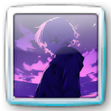

Wyświetl podstawowe informacje o xdeku
Siema, jestem xdek. Mam 15 lat, i jestem oczywiście z Polski. Lubie robić rzeczy związane z technologią, takie jak naprawa ich, zbieranie starych telefonów, lub robienie modyfikacji systemów Windows, takich jak Relive7. Aktualnie nie umiem programować, więc większość rzeczy poprostu biore, lecz chcę się tego nauczyć (najbardziej C++/C#).
Aktualnie to za bardzo nic nie robie, lecz wziąłem się za ponownie robienie modyfikacji Windows dla The Relive Team, lecz także zająłem się zbieraniem starych telefonów takich jak różne Lumie, lub starsze iPhony (najlepiej na starym iOSie, gdzie ostatnio zostałem oscamowany na 6sa z Japonii).
Możesz mnie znaleść na moim YouTube, The Relive Team (Discord), GitHub, i oczywiście na tej stronie, lecz jeśli chcesz, możesz wysła maila na mój adres mailowy (preferowany jest kontakt przez discorda, więc nie spodziewaj się jak po tygodniu nie dostaniesz odzewu XD)
Jeśli chcesz mnie wesprzeć, to możesz dać darowiznę poprzez mój profil Ko-fi, ale to już zależy w pełni od ciebie, lecz bardzo taką darowiznę docenie!